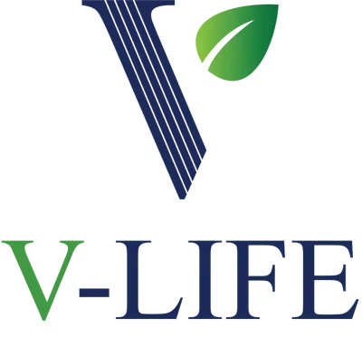
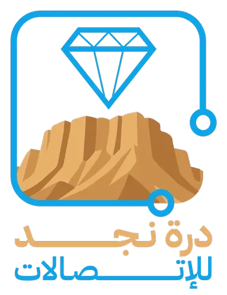

منتجات طبية
SEO تقني + محتوى
طيف الماسية الطبية
تحسين تقني للمتجر ومطابقة نية البحث لخدمات ومنتجات التجميل الطبي لزيادة الظهور العضوي.
SEO تقني
كلمات مفتاحية
متخصص SEO و GEO و AEO | أحوّل الزيارات إلى مبيعات فعلية
أنا مروان النجدي. لو عندك متجر أو موقع إلكتروني ومبيعاتك من جوجل — أو حتى من ChatGPT وأدوات الذكاء الاصطناعي — واقفة مش بتتحرك، أنا الشخص اللي تقدر تحطّه مسؤول عن حل المشكلة دي. مش تقرير بيتقرا مرة واحدة ويتنسى، ده شغل مستمر لحد ما نشوف الأرقام بتتحرك فعلًا.
خبرة عملية تتجاوز 5 سنوات في السيو التقني، بحث الكلمات المفتاحية، ومطابقة نية البحث — بالإضافة إلى تهيئة المحتوى للظهور في إجابات الذكاء الاصطناعي (GEO/AEO) — على منصات Salla وShopify وWooCommerce وZid.


أنا مروان النجدي، متخصص شغوف بحل مشكلة واحدة بالظبط: مبيعاتك العضوية لما بتقف — سواء من جوجل، أو من أدوات الذكاء الاصطناعي اللي بقى الناس بتسأل فيها قبل ما تشتري.
بدأت في مجال السيو من شغف حقيقي بفهم إزاي محركات البحث بتفكر، وطورت خبرتي عمليًا من خلال التدريب الميداني وتنفيذ مشاريع حقيقية مش نظرية بس — من التدقيق التقني الكامل، مرورًا ببحث الكلمات المفتاحية ومطابقة نية البحث، وصولًا لتحسين المحتوى وبناء الروابط. النهاردة بشتغل مع أصحاب المتاجر والمواقع الإلكترونية في السعودية ومصر على استراتيجيات SEO مبنية على بيانات حقيقية، مش تخمين.
اللي بيميزني إني مش واقف عند السيو التقليدي بس — بستثمر وقت إضافي في فهم GEO (تحسين الظهور في محركات الذكاء الاصطناعي) وAEO (تحسين الظهور كإجابة مباشرة)، عشان علامتك التجارية تكون حاضرة في كل مكان بيدور فيه عميلك المحتمل، مش في جوجل بس. هدفي مش أرقام على تقرير — هدفي زيارات حقيقية بتتحول لعملاء، ونتيجة تقدر تحسّها في مبيعاتك.
رحلة عملية في مجال تحسين محركات البحث وتطوير المهارات التقنية.
شمل التدريب البحث عن الكلمات المفتاحية وتحسين المحتوى والتحسين التقني للمواقع وبناء استراتيجيات SEO.
العمل على مشاريع حقيقية واستخدام أدوات SEO المختلفة وتحليل المنافسين وتحسين أداء المواقع.
خطوات واضحة من أول تدقيق لآخر تقرير نتائج.
فحص شامل للمتجر أو الموقع تقنيًا ومحتوى ومنافسين لتحديد نقاط الفرصة.
تحديد الكلمات التي يبحث بها عملاؤك فعليًا ومطابقة نية البحث.
إصلاح الأرشفة، سرعة التحميل، البيانات المنظمة، وبنية الموقع.
صياغة عناوين ووصف منتجات تجذب الزوار ومحركات البحث معًا.
متابعة الأداء شهريًا وتطوير الاستراتيجية بناءً على النتائج.
مزيج بين الجانب التقني وجانب المحتوى والتحليل.
خدمات مرنة حسب حجم مشروعك واحتياجه الفعلي — متجر كان أو موقع إلكتروني — تغطي SEO التقليدي وGEO وAEO مع بعض.
تقرير مفصل بكل مشاكل الأرشفة، السرعة، والمحتوى، مع خطة تنفيذ واضحة تعرف تبدأ بيها فورًا.
خريطة كلمات مفتاحية لكل صفحة منتج وفئة، مبنية على سلوك بحث عملائك الفعلي مش تخمين.
تنظيم المحتوى وبناء البيانات المنظمة عشان علامتك التجارية تظهر في إجابات جوجل وChatGPT وأدوات الذكاء الاصطناعي، مش في نتائج البحث التقليدية بس.
متابعة مستمرة، تحسين محتوى دوري، وتقارير أداء شهرية بالأرقام — مش تقرير واحد وخلاص.
نماذج من متاجر ومواقع إلكترونية اشتغلت على تحسين ظهورها في محركات البحث.
تحسين تقني للمتجر ومطابقة نية البحث لخدمات ومنتجات التجميل الطبي لزيادة الظهور العضوي.
إعادة هيكلة صفحات المنتجات وتحسين سرعة الموقع لرفع ترتيب الكلمات الأساسية في مجال القوة والحيوية.
بناء استراتيجية كلمات مفتاحية للفئات والمنتجات مع تحسين البيانات المنظمة لظهور أقوى في نتائج البحث.
تحسين وصف المنتجات وعناوين الصفحات وإصلاح مشاكل الأرشفة لرفع الظهور العضوي.
استهداف كلمات مفتاحية محلية وتحسين صفحات المنتجات لجذب زوار مهتمين فعليًا بالشراء.
تحسين تقني كامل للمتجر مع صياغة محتوى منتجات يطابق نية بحث العميلات في سوق العبايات.
وغيرهم كتير 😉
متوسط النتائج التي تحققت في مشاريع سابقة على مدار سنوات العمل.
النتائج تختلف حسب طبيعة كل متجر أو موقع ومنافسيه، لكن المنهجية واحدة: تدقيق، تنفيذ، وقياس مستمر.
من خلال تحسين تقني ومحتوى مستهدف، تتحسن فرص ظهور المنتجات في نتائج البحث الأولى.
أفكار وتجارب عملية من شغلي مع متاجر ومواقع إلكترونية في السعودية ومصر.
جارِ تحميل المقالات...
إجابات مباشرة وواضحة — لو محتاج تفاصيل أكتر، تواصل معايا مباشرة.
أنا متخصص SEO مصري بخبرة عملية تتجاوز 5 سنوات، اشتغلت مع أكتر من 50 متجرًا وموقعًا إلكترونيًا في السعودية ومصر على منصات Salla وShopify وZid وWooCommerce. هدفي إني أحوّل الزيارات العضوية لمبيعات فعلية، مش مجرد أرقام على تقرير.
SEO هو تحسين الظهور في نتائج البحث التقليدية زي جوجل. GEO (Generative Engine Optimization) هو تهيئة المحتوى عشان يظهر ويُقتبس منه في إجابات أدوات الذكاء الاصطناعي زي ChatGPT وGemini. أما AEO (Answer Engine Optimization) فهو تنظيم المحتوى في صورة سؤال وجواب واضح عشان يظهر كإجابة مباشرة. أنا بشتغل على الثلاثة مع بعض عشان أضمن ظهور أوسع لعملائي في كل مكان بيدوّر فيه عميلهم المحتمل.
غالبًا أول نتائج ملموسة بتبدأ تظهر خلال 3 إلى 6 أشهر من العمل المستمر، والنمو الأكبر في الزيارات والمبيعات بيتضح خلال 6 إلى 12 شهر — حسب حجم المنافسة في مجالك وحالة موقعك أو متجرك قبل ما نبدأ.
أيوه، الخدمات مصممة بمرونة حسب حجم مشروعك الفعلي — من تدقيق SEO شامل لمرة واحدة لمتجر ناشئ، لحد إدارة SEO شهرية مستمرة لمتجر أو موقع أكبر محتاج متابعة دورية.
بشتغل بثقة على Salla وShopify وZid وWooCommerce، بالإضافة للمواقع الإلكترونية الخدمية بشكل عام، وبستخدم Google Search Console وGoogle Analytics في التتبع والتحليل أول بأول.
لو عندك متجر أو موقع إلكتروني ومبيعاتك من جوجل — أو من أدوات الذكاء الاصطناعي — واقفة أو مش بتتحرك زي المفروض، ابعتلي تفاصيل مشروعك ونتكلم. هرد عليك بنفسي.